项目概要：广州餐饮文化在全国具有独特地位，尤其老城区的街巷餐饮空间更具地方特色和烟火气，因此 深度解析广州老城街巷餐饮空间对美食文化的传承和发展具有重要意义。基于大众点评 POI 数据，获取广州街道餐饮密度、均价、活力、口碑、丰富度与老字号数量的六项指标。基于问卷结果对街道餐饮业态进行加权打分，从而得到广州街道的餐饮综合分数。研究发现广州老城餐饮空间呈现明显聚集性，并沿道路线性分布。基于此，研究从“点-线-面”的层次提出相应规划策略：老字号和网红店以点带面；打造两条美食游径；餐饮文化区活动策划。
下载文章：《文化传承视角下老城街巷餐饮空间布局研究——以广州为例》.pdf
餐饮业作为城市服务行业的重要组成部分之一，其商户数量与空间分布能够在一定程 度上反映一个地区的经济文化发展水平。广州作为国务院公布的全国第一批历史文化名城之一，拥有 2200 多年深厚的历史积淀，其“食在广州”的餐饮文化在全国具有独特地位。 而广州老城区传统街巷保留较完整的空间格局，承载城市历史文脉和市民集体记忆，是体现广州餐饮文化特色和传统餐饮空间风貌的最佳空间载体。结合广州地域餐饮文化特征， 从街巷尺度对广州老城区的餐饮空间布局进行分析与评价，对指导广州城市规划建设与餐 饮空间选址具有重要意义，有助于通过餐饮空间对逐渐衰落的街巷进行活化，在丰富本土餐饮文化内涵的同时激活其生命力，实现老城街巷保护与社会生活的有机结合。
本文在综合前人的理论与方法基础上，以富含广州特色餐饮文化的老城区作为研究区域，基于其特殊的街巷肌理与空间特点，以街巷为基本研究单位，运用 ArcGIS 平台，结合 “美团”数据对广州老城区饮空间进行深度解析。并基于构建多因子综合评价体系分析广州老城街巷餐饮空间分布总体特征，以期挖掘与弘扬广州老城的餐饮地域文化，为广州老城区独特的餐饮空间规划提供参考，促进广州老城区餐饮文化传承与高质量发展。
本文中广州老城区范围参考《广州历史文化名城保护规划》公示稿中历史城区保护范围，并以该范围内378条传统街巷沿线的实体餐饮店为研究对象,包括小吃店饭店、酒楼等以及餐饮老字号等。街巷作为人们生活与活动的重要空间，可视为城市餐饮空间的出发点与发源地，以街巷为尺度对广州老城区的餐饮空间进行研究具有典型性与代表性。
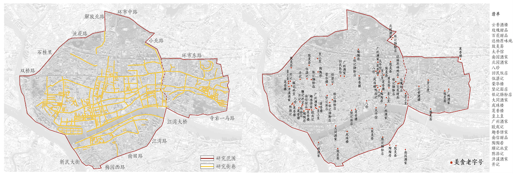
研究范围
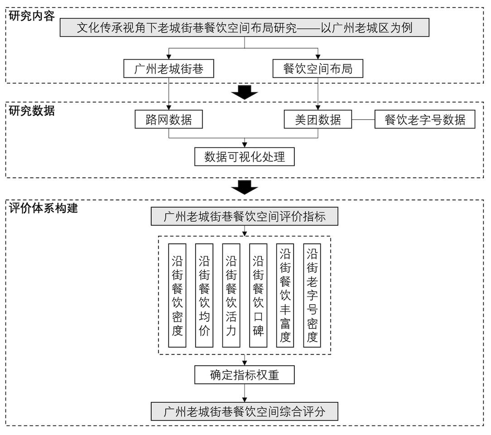
研究框架
对沿街餐饮密度、沿街餐饮均价、沿街餐饮活力、沿街餐饮口碑、沿街餐饮丰富度以及沿街老字号密度6项评价指标分为5级进行赋分（如下表格所示），并输出每一项指标的得分结果
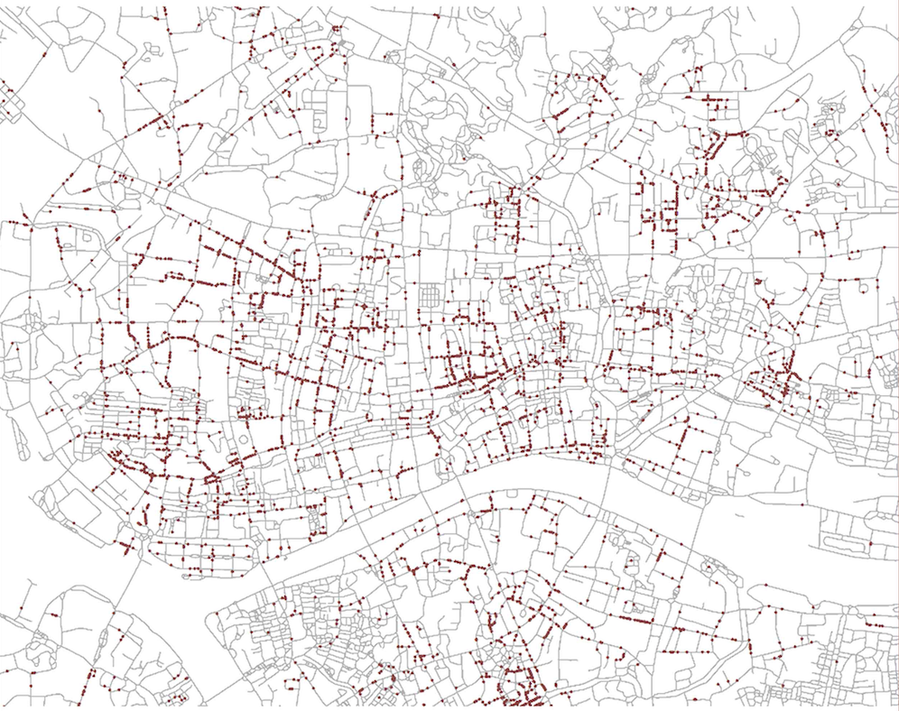
街道数据和餐饮POI数据可视化
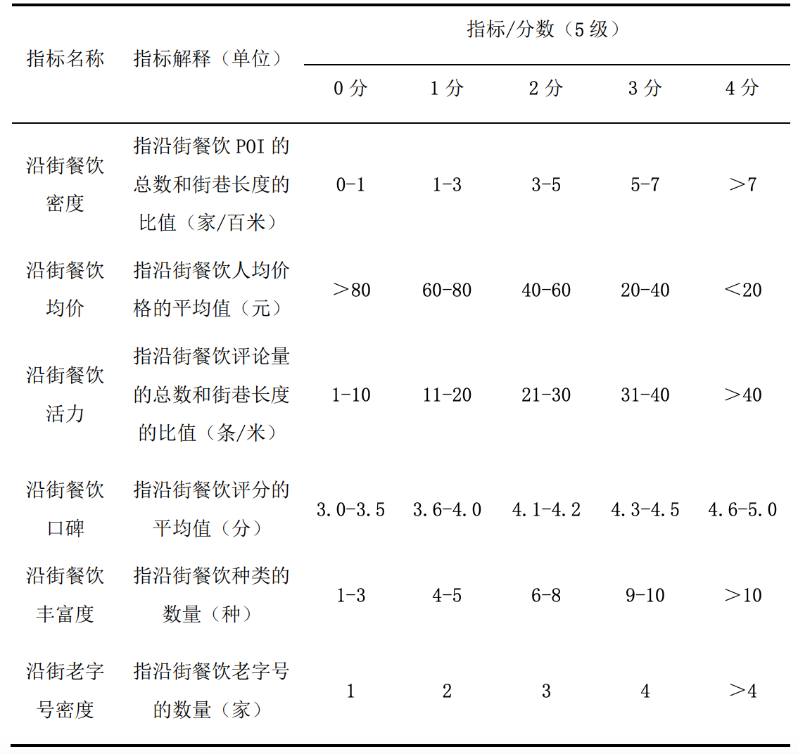
指标赋分标准
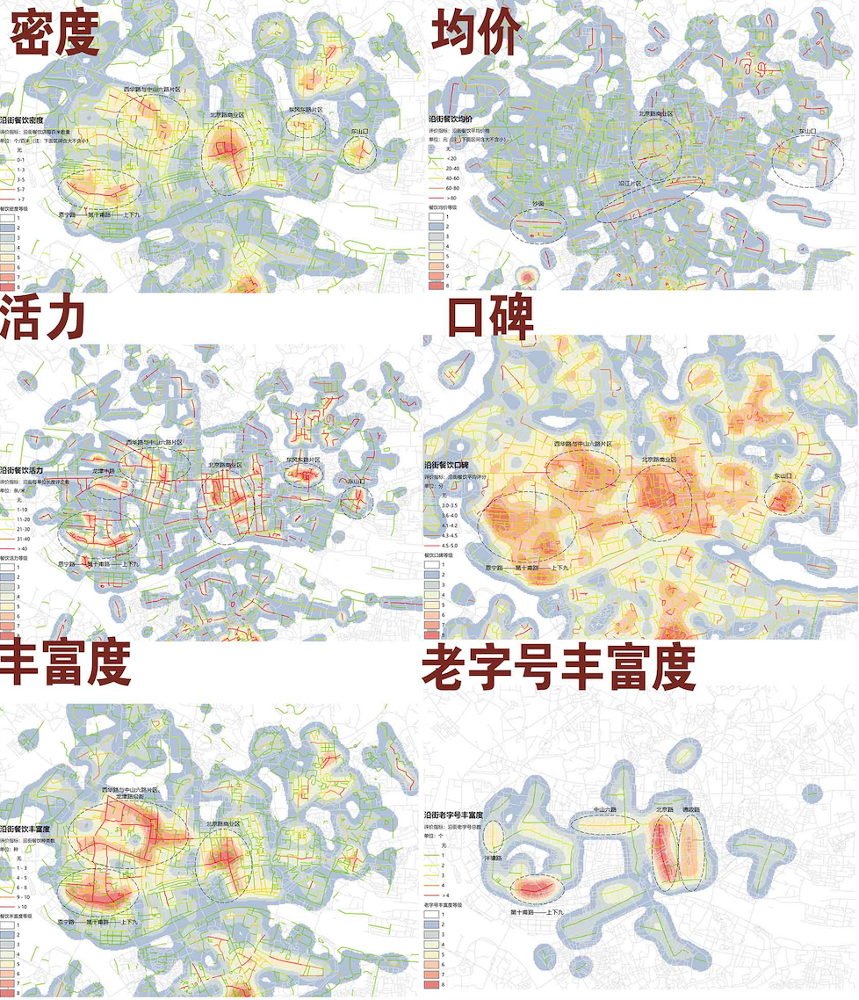
六项指标分析结果
通过问卷获取顾客选择餐厅时对各项指标的重视程度
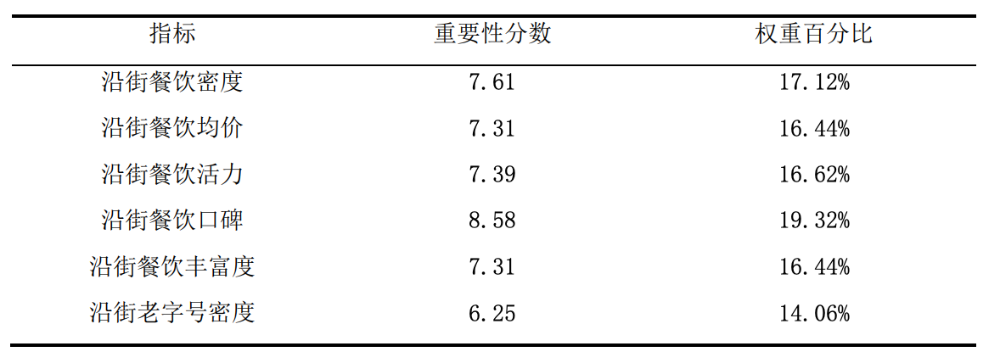
各项指标的权重结果
对每条街巷指标分数进行加权求和，从而获得综合评分
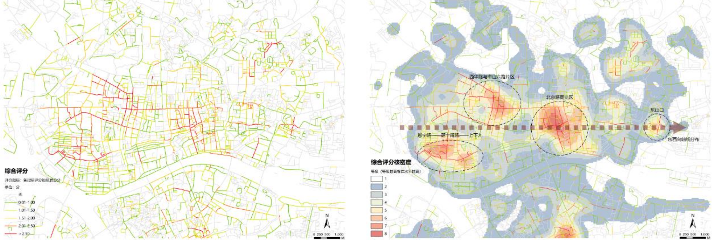
综合评分结果
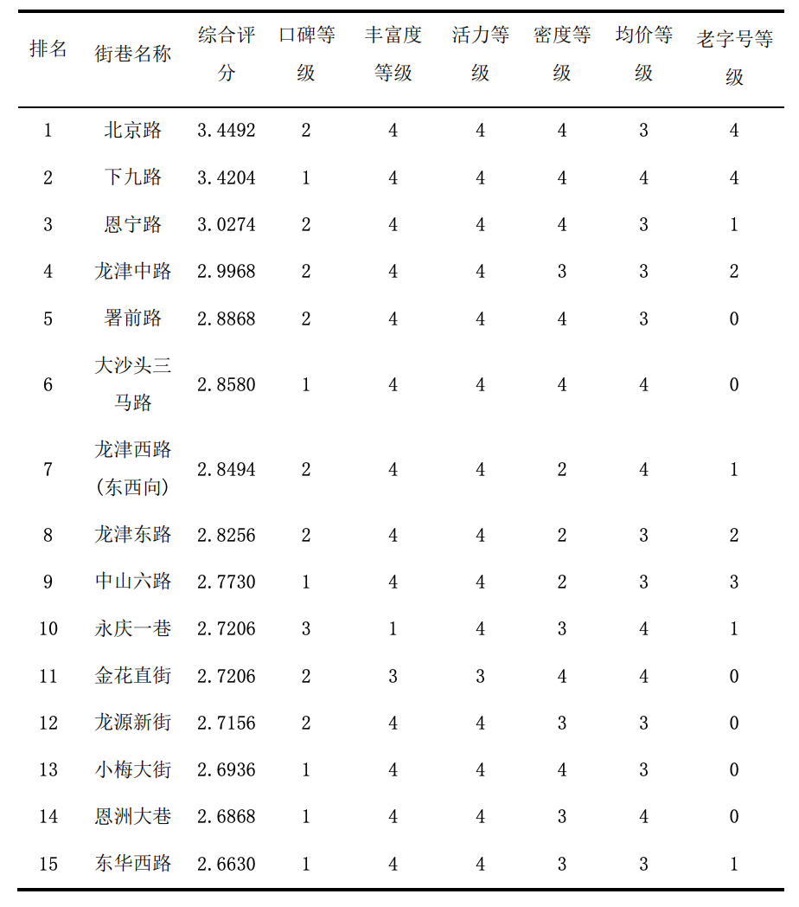
综合评分前十五名的街道
广州老城街巷各高水平聚集餐饮空间的分布呈现出东西向轴线分布的特征。其中，西华路与中山六路片区、恩宁路--第十甫路-上下九片区、北京路商业区呈现出较高水平餐饮的聚集，形成一定区域范围的美食圈,东山口片区相较次之。同时,历史价值意义显著的区域（如骑楼环、北京路等），往往呈现出与其历史背景相应的更高的餐饮水平。
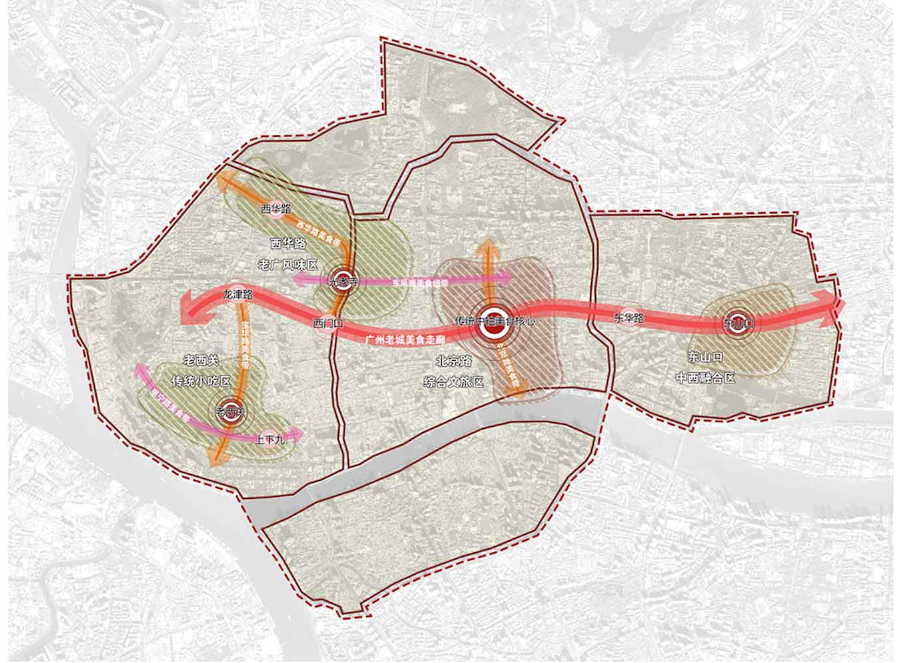
广州老城区餐饮空间分析图
研究还发现：
广州老城街巷餐饮空间具有浓郁的餐饮文化特色以及独特的生活气息，但随着城市化的推进，老城区内越来越多的街巷走向衰落，通过对文化的注入与传承以及餐饮空间的针 对性规划，实现街巷活力的恢复与延续，有助于广州老城区餐饮文化传承与高质量发展。建议通过发挥餐饮老字号优势、构建老城特色游径、策划多元特色餐饮消费，实施点-线-面 三个层面下的广州老城街巷餐饮空间规划策略。
下图是一幅三维的数据可视化图，底图的范围是广州老城区。老字号（下图蓝色线条，越高代表年龄越老）和网红店（下图橙色线条，越高代表越火）所在的区域是不一样的。老字号集中在居民区，而网红店集中在北京路等热门景点。
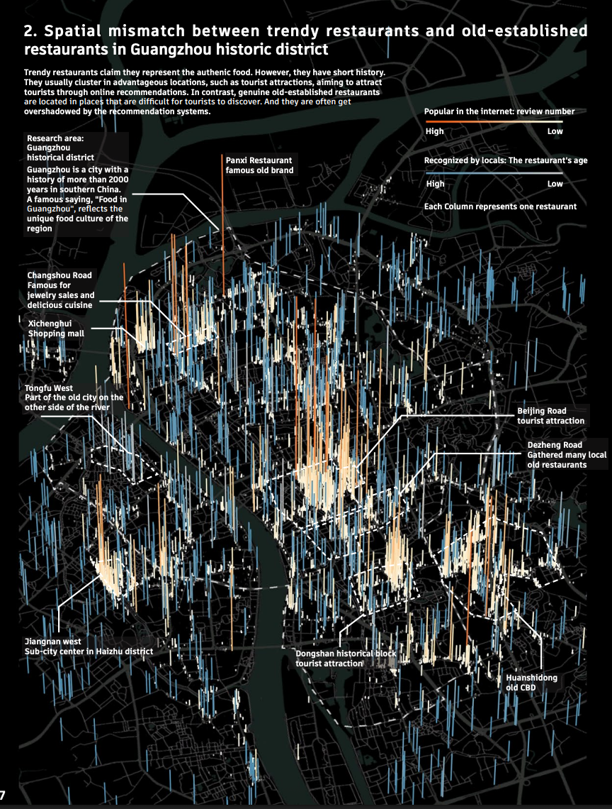
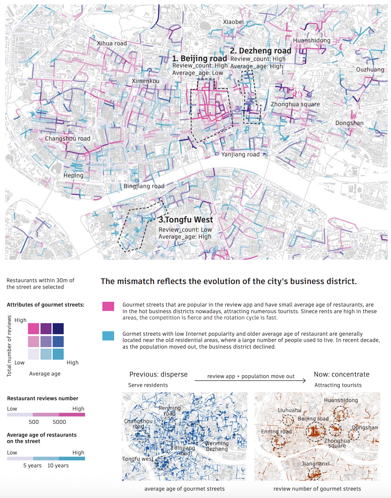
该图揭示了城市餐饮空间的演变过程。以前餐厅主要是服务本地居民，分布在居民区附近，特征是年龄老。这些“老字号”经历了多年的竞争，已经获得了当地居民的认可。然而，由于老城区人口外迁，客源减少，这些营业几十年的老字号正在式微。如今，老城区的餐饮消费主要由游客支撑，而游客选择餐厅依赖于互联网的推荐。当前互联网评价数量最高、最火的餐厅主要集中在北京路、德政路等旅游消费中心。他们的平均开业年限都很短，平均寿命也很短，几乎在0-3年内倒闭，反应了当下网红餐饮业“追逐热点，快开快关”的经营策略。整体趋势表明，由于老城区人口外迁和互联网对餐饮空间的重塑，广州老城区的餐饮商业正从分散、服务本地居民、老字号为主的格局，转向中心化、服务游客和网红快闪店为主的格局。
[{"start":47,"end":47,"color":"#000000"}] []